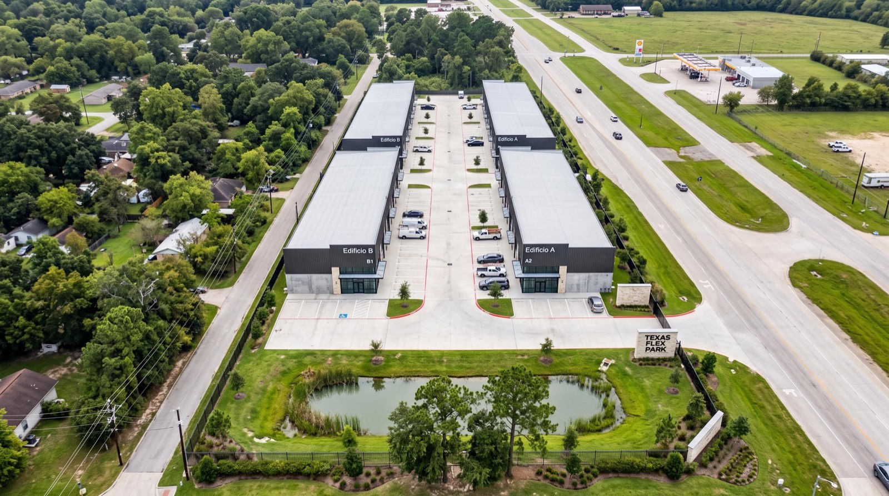
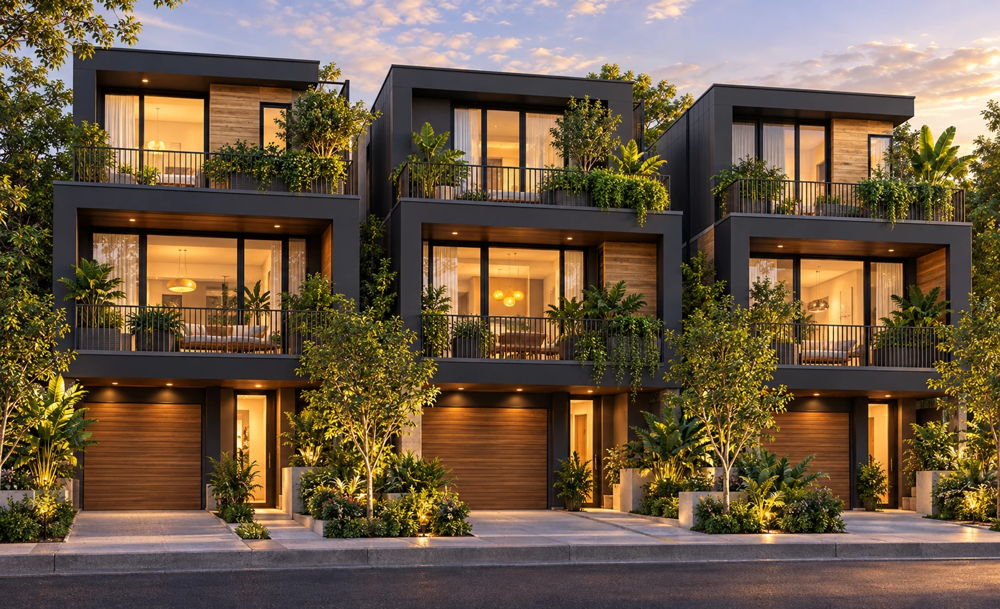

Single-family
1 viviendaEntrar directamente a construcción sobre un lote preparado.
NorthReach / sesión de inversión
De un lote listo para construir a un desarrollo comercial desde cero.

La conversación de mañana
Las tres rutas comparten el mismo sistema de ejecución; cambia el tamaño del capital, el producto y la complejidad del desarrollo.
Entrar directamente a construcción sobre un lote preparado.
Duplicar producto y salida sobre una sola ejecución.
Desarrollar 50% de Elmira: terreno, estudios, obra civil y dos edificios.
Escenarios preliminares sujetos a lote, survey, permisos, financiamiento, precios de mercado y presupuesto final.
01 / Construcción desde shovel-ready
El terreno ya está preparado para construir. El capital se concentra en ejecutar una vivienda, controlar calendario y cerrar con venta o renta.

Escenario preliminar / modelo Mejorada
3.49% retorno sobre costo según el escenario actual.
El margen es sensible al precio final, terreno y presupuesto de construcción; requiere afinación antes de inversión.
02 / Construcción desde shovel-ready
La misma lógica de construcción directa, con dos puertas y mayor flexibilidad de salida: vender, conservar o combinar estrategias.

Escenario preliminar / modelo South Duplex
*La hoja fuente identifica 2,467 SF de edificio. Confirmar programa, áreas por unidad, planos, permisos, deuda e intereses antes de presentar una corrida definitiva.
03 / Construcción desde cero
Una entrada por fases al producto flex comercial: dos de cuatro edificios, manteniendo la lógica de módulos divisibles y absorción gradual.
La mitad del programa se modela de forma proporcional. La adquisición y obra civil pueden no dividirse linealmente; deben verificarse para la fase real.

Escenario proporcional / 50% del modelo Elmira
Base: 17,500 SF × $114/SF; valor $190/SF. Incluye 50% proporcional de terreno, predesarrollo, permisos, obra civil y contingencia del modelo de cuatro edificios. No incluye financiamiento, carry, impuestos ni costos de venta.
La decisión no es sólo el retorno
*Retorno sobre costo, no anualizado. Los tres escenarios provienen de modelos distintos y no son ofertas ni garantías de rendimiento.
Siguiente paso
Elegimos el nivel de inversión y NorthReach convierte esa decisión en un proyecto ejecutable.
Coordinar underwriting y selección ↗